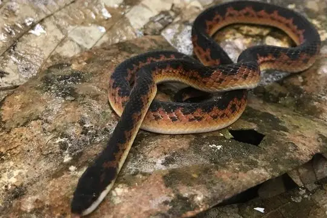
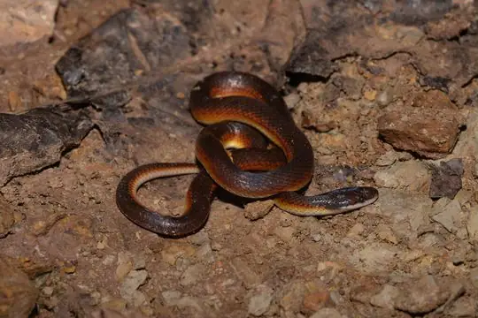

Xenopholis
The genus Xenopholis (family Colubridae) has 3 living species in SnakeList (none venomous), recorded in 7 countries (+1 territory).
- 3living species
- 3non-venomous
- 7countries
About the genus
A genus of the family Colubridae (colubrids).
Species
Showing 3 species

Jensen's Ground SnakeXenopholis undulatus Wucherer's Ground SnakeXenopholis scalaris
Wucherer's Ground SnakeXenopholis scalaris
Xenopholis werdingorum
No snakes in Xenopholis match.
About the genus Xenopholis
- Distribution: living species recorded in 7 countries (+1 territory), on one continent: South America.
- Family: Colubridae.
- Countries and territories: Bolivia, Brazil, Colombia, Ecuador, French Guiana, Paraguay, Peru, Suriname.
Compare its species
Its living species side by side. Lengths come only from SnakeList’s reviewed, sourced accounts; the others are left blank rather than guessed.
| Species | Venom | Recorded in | Adult length (reviewed accounts) |
|---|---|---|---|
| Jensen's Ground Snake Xenopholis undulatus | Non-venomous | 2 countries (South America) | No reviewed account yet |
| Wucherer's Ground Snake Xenopholis scalaris | Non-venomous | 6 countries (+1 territory) (South America) | No reviewed account yet |
| Xenopholis werdingorum | Non-venomous | 2 countries (South America) | No reviewed account yet |